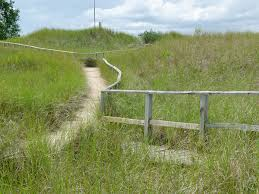

Welcome to our ranch!

At Float Copper Ranch, we believe farming is more than producing food — it’s about caring for the land, raising healthy animals, and building a place where people can reconnect with nature. Our ranch is built on the values of hard work, stewardship, and sustainability. Every field we plant and every animal we raise will reflect our commitment to quality and responsible agriculture. Float Copper Ranch will focus on producing wholesome products while maintaining healthy soil, clean water, and thriving ecosystems. We believe the best food starts with respect for the land and thoughtful ranching practices.

wide open land where golden grasses sway beneath an endless Michigan sky. Gentle rises in the terrain lead toward the water, creating a landscape that feels both rugged and peaceful. This is a place built on hard work, quiet mornings, and open space—where livestock roam freely and the rhythm of the land sets the pace. It’s more than scenery; it’s the foundation of the life we’re building at Float Copper Ranch.